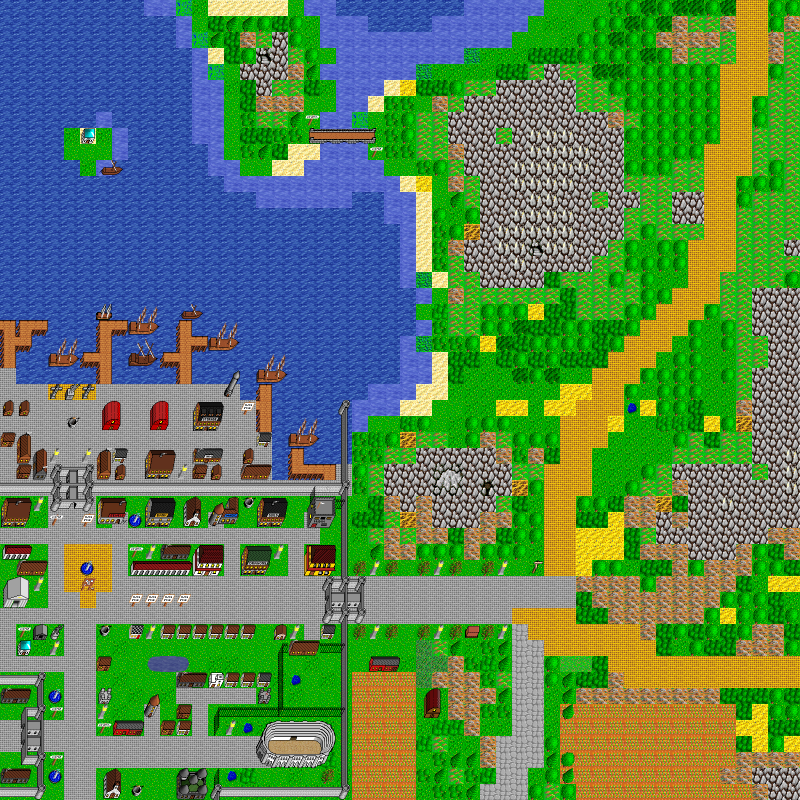

world_105_115
Map world_105_115, in region The Kingdom of Scorn. Map level: 1.
Map view:

(click for larger view)
Exits from this map:
Exits to this map:
- Angry Giant's Bungalow
- Animal Quarantine
- Apartment Building
- Apartments
- Arena Entrance
- Bank of Skud
- Barracks
- Bowyer's Workshop
- Brest Town House
- Castle Gatehouse
- Chess Club
- Church of Gorokh
- Cloud World de City
- Doors Galore
- Dragon Guild of Scorn
- Drinking Fountain
- Eastern Gate of Scorn
- Fun House
- Gnolls Grotto
- Goblin Chief
- Gork's Grovel, Level 1
- Goth's Tavern
- Guild of Black Shield, Main Floor
- Guild of Damned Heretics, Main Floor
- Guild of Dreaming Sage, Main Floor
- Guild of Drunken Barbarian, Main Floor
- Guild of Green Goblin, Main Floor
- Guild of Ketsueki Itsuryuu, Main Floor
- Guild of Laughing Skull, Main Floor
- Guild of Mailed Fist, Main Floor
- Guild of Mailed Fist, Storage Room
- Guild of Mockers, Main Floor
- Guild of Nenshou Youso, Main Floor
- Guild of Poisoned Dagger, Main Floor
- Guild of Purple Butterfly, Main Floor
- Guild of Smoking Cauldron, Main Floor
- Guild of Zaseki Dzuki Ryoku, Main Floor
- Hall of Dungeon Masters
- Harry's Place
- House of Healing
- House of Porters
- House of Power
- Jacob's Lighting Emporium
- Jeweler's Workshop of Scorn
- Lake House
- Lighthouse, Entrance
- Mad Mage's Tower, Entrance
- Mad Mage's Tower, Top
- Medieval Kitchen
- Mess Hall
- Metal Smith's Workshop
- Old Basement
- Old City
- Pirates' Arena
- Port Gate of Scorn
- Port Inn
- Puddings Place
- Resir's House
- Scorn Central Library
- Scorn City Hall
- Scorn Gem Shop
- Scorn Jail
- Scorn Mansion - Entrance
- Scorn Port Ticket Office
- Scorn Prison
- Scorn Private Shop
- Scorn Sale Shop
- Scorn Tannery
- Scorn's Acme Inc. Building Shop
- Ship to Santo Dominion
- Ship to Scorn
- Shrine of Ixalovh
- Smith's House
- Stonebridge
- Stronghold
- Temple of the Devourers
- Terry's Farm
- Tyl's House
- Undead Church
- Underwater Dungeon Level 2
- Underwater Dungeon Level 3
- Wizard's Workshop
- Wood House
- world_101_114
- world_104_115
- world_105_114
- world_105_115
- world_105_116
- world_106_115
- Yarid's House, Entrance
- Zoo
No monster on this map.
The Kingdom of Scorn's map index | Region index | Global map index | World map
{kind=link}